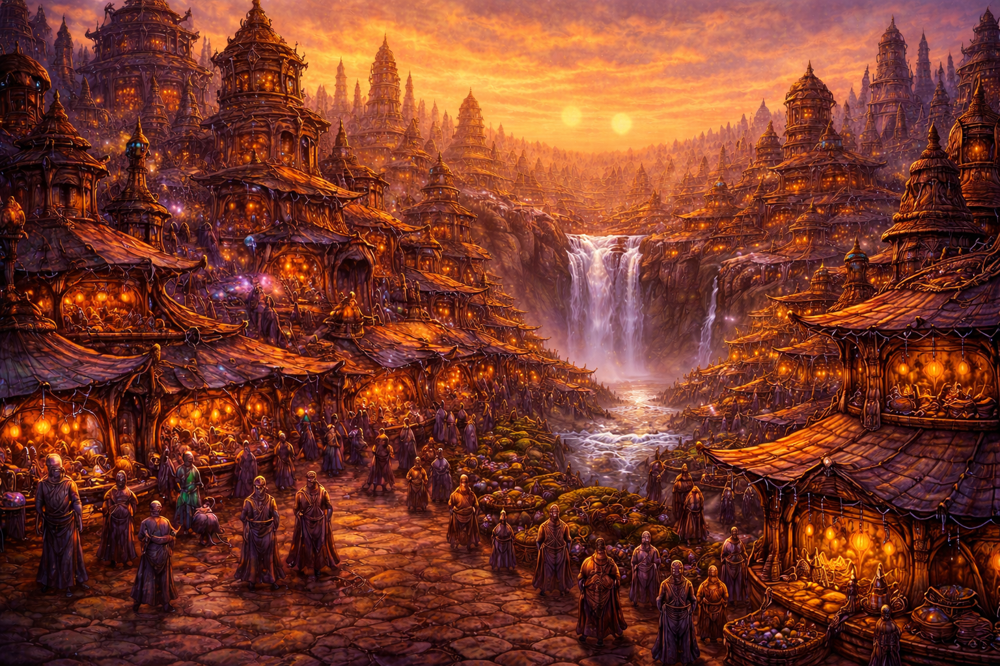

Corrath

This depiction was approximated using primitive Earth-based imaging technology
Corrath is the beating, slightly irregular heart of Ashashua. It is loud, it is crowded, and it smells predominantly of Creampops with an undertone of something you cannot identify and probably should not investigate. If you have arrived here through a dimensional portal and are experiencing disorientation, confusion, or an overwhelming sense that everyone around you knows something you do not — congratulations, you are having the authentic Corrath experience.
The city has existed for as long as anyone can remember, and longer than most people care to research. It grew the way most great cities grow: without anyone particularly planning it, around things that people wanted. In Corrath's case, those things were Creampops, commerce, and the vague but persistent feeling that this was where everything important was happening. For the most part this feeling is correct.
The market district is the undisputed center of Corrath's chaos. Creampops are traded, argued over, occasionally weaponized in disputes that escalate faster than anyone intends. It is customary to offer a Creampop to anyone of authority in Corrath, which is complicated by the fact that Corrath has an unusually high density of authority figures per square mile. Newcomers are advised to bring extras.
On the outskirts of Corrath, where the city's noise fades into forest, the atmosphere changes considerably. The trees are older here. The roads are quieter. It is the kind of place where you might have an unexpected encounter that changes your understanding of why you came here in the first place. It is also where the Bydo-X have been spotted most frequently, which the city's tourism board has chosen not to prominently advertise.
The Tower Of Lost Souls is technically within Corrath's jurisdiction. Gloomwing pays no taxes.